2026 French/German Adsorption Conference
The Conference
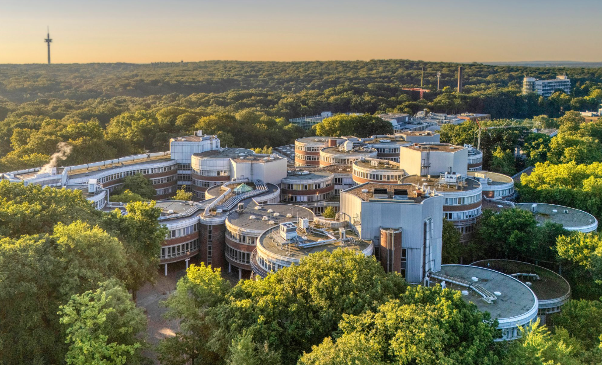
The 2nd Adsorption Conference organized by the “French-German Adsorption Initiative” will be held in Duisburg (Germany)
between March 24th and 26th, 2026. The conference is supported by the German Adsorption Group (DECHEMA) and the French
“Association Francaise de l’Adsorption (AFA)”.
The aim of the conference is to bring together and foster collaboration between scientists from these two communities. However, we see this joint initiative as a platform that could be extended to all European countries in the very near future. Therefore we are open for presentations from France, Germany and neighboring countries. The conference will be organized around oral and poster sessions as well as four invited plenary talks.
It will focus on the following themes but any presentation related to adsorption phenomena is welcome:
- Characterization of porous materials
- Molecular modelling of adsorption phenomena
- Thermodynamics and kinetics of adsorption
- Gas phase adsorption processes (PSA / TSA / CSA / …)
- Liquid phase adsorption processes and chromatography
Program
The conference program can be downloaded as an overview
or as detailed program .
You can also find the poster program
and the book of abstracts here.
Information for oral presenters
The ideal format for the presentation is 16:9. A notebook and a wireless presenter will be provided. Please bring your presentation slides as PowerPoint file on a USB stick. In case that you need internet /special software for your presentation or if you have videos included into your file, please notify us in advance.
An oral presentation is planned for a duration of 25 minutes including Q&A. Strict timekeeping will be essential for the smooth running of the conference. We suggest to use a minimum font size of 24 pt for your presentation slides.
Information for poster authors
A poster board will be available for each poster, with the poster number attached. The posters will be shown throughout the whole conference. Please hang up your poster at the beginning of the meeting on 24 March 2026.As a major guideline it is proposed to make the poster intelligible in itself, even in the absence of the author. It is suggested to divide the content of each poster into introduction, results and conclusion, with a summary listing the pertinent results and conclusion. Standard size for posters is 0.85 x 1.2 m (DIN A0 German Standard) vertically oriented.
To ensure that the text is still legible from a distance of 2-3 m, the main text should be written in font size 25-30 pt, marginal information can be slightly smaller with font size 20-25 pt. The title of a poster must be readable from a distance of approx. 5 m (100-200 pt). Subtitles and headings in the text can be written in 50 pt font.
Best posters will be awarded with a poster prize.Conference fees / Registration
Registration- Industry: 550 EUR; Gala Diner: + 50 EUR
- Academia: 400 EUR; Gala Diner: + 50 EUR
- PhD-student: 250 EUR; Gala Diner: + 50 EUR
The location
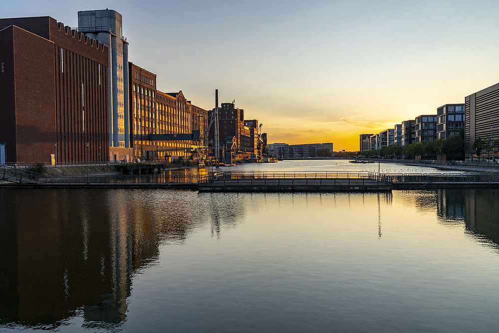
The city of Duisburg has ca. 500.000 inhabitants and provides a great venue for a scientific conference.
It is located in the western part of Germany near the border to the Netherlands.
The venue is next to the Duisburg main railway station, which is well connected to the European train system.
The international airport of Düsseldorf is reached directly by train in less than 20 minutes.
Venue
Address: University of Duisburg-Essen, Lotharstraße 1, 4757 Duisburg, Germany
The routes from the tram stop, the bus stops, and the parking deck are clearly marked. Please follow the signs.
You can find an overview of the venue here .
- Traveling by tram from Central statio: Take line 901 to Zoo/Uni
- Traveling by bus from Central station: Take line 924 or 926 to Uni-Nord/Lotharstr. or 933 to Uni-Nord
- Traveling by car: Parking in the parking deck (Address: Carl-Benz-Straße 199, 47057 Duisburg)
Accommodation
Below you find a selection of accommodation options. Prices are per night and include breakfast. Please make sure to enter the individual booking code when making your reservation.- B&B HOTEL Duisburg Hbf-Nord (72,90 € double room (one person), until 01 March 2026, booking code: Uni-Duisburg-Essen)
- B&B HOTEL Duisburg Hbf-Süd (103,90 € single room, until 10 February 2026, booking code: 2nd French-German Adsorption Conference)
- Hotel Plaza (114,00 € single room, until 24 February 2026, booking code: Adsorption)
- Intercity Hotel Duisburg (89,00 € single room, until 24 February 2026, booking code: Adsorption)
- Mercure Hotel Duisburg City (109,00 € single room, until 03 March 2026, booking code: Adsorption)
The time schedule
The conference will take place in the buildings of the faculty of engineering of the University of Duisburg-Essen. It will start after lunch on Tuesday, March 24th, 2026 and will close on Thursday, March 26th, 2026 around noon (a lunch bag will be provided). A combined wine/cheese and beer/bretzel event will be organized on the first evening while a social gala dinner will be organized on the second evening.
More details on conference organization will be provided later, but please already mark the dates in your calendar.The proposed time schedule is:
- 08.09.2025 Call for papers (closed)
- 22.10.2025 Deadline for abstract submission
- 05.12.2025 Publication of final program
- 06.12.2025 Start of early bird registration
- 16.01.2026 Deadline for early bird registration
- 15.02.2026 Deadline for abstract submission (recent research poster)
- 13.03.2026 Deadline for regular registration
- 24.03.2026 Start of conference
Invited Speakers
- Sofia Calero (Eindhoven University of Technology),
- Joeri Denayer Iffland (Vrije Universiteit Brussel),
- Vaness Fierro (CNRS Institut Jean Lamour),
- Christian Voss (Linde Engineering).
The organization committee
Chairman:
Benoit Coasne (benoit.coasne@univ-grenoble-alpes.fr)
Dieter Bathen (dieter.bathen@uni-due.de)
Junior chairman:
Benjamin Claessens (benjamin.claessens@univ-amu.fr)
Christian Bläker (christian.blaeker@uni-due.de)
Local organizing committee:
Iris di Nisio (iris.di-nisio@uni-due.de)
Ramona Fels (fels@jrf.nrw)
Malte Menk (malte.menk@uni-due.de)
Jonas Beerlage (jonas.beerlage@uni-due.de)
Sponsors
- Main sponsors
Linde CarboTech 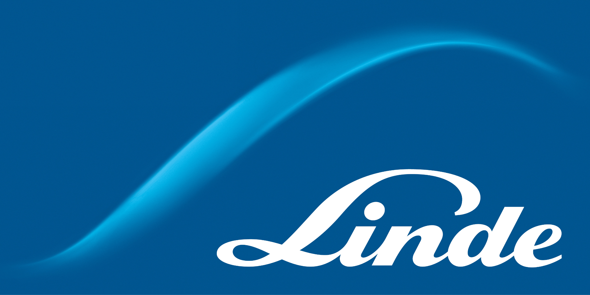
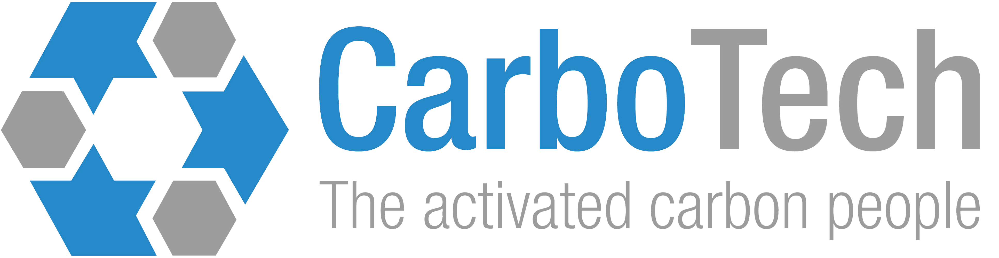
Microtrac Messer SE & Co. KGaA 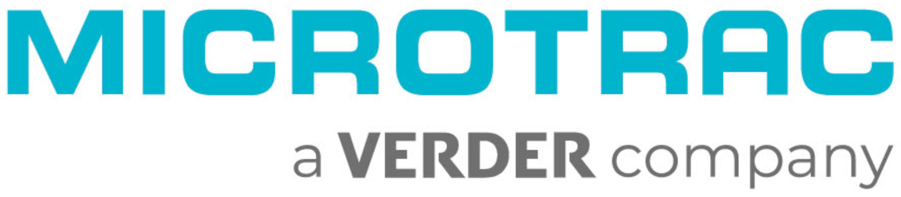
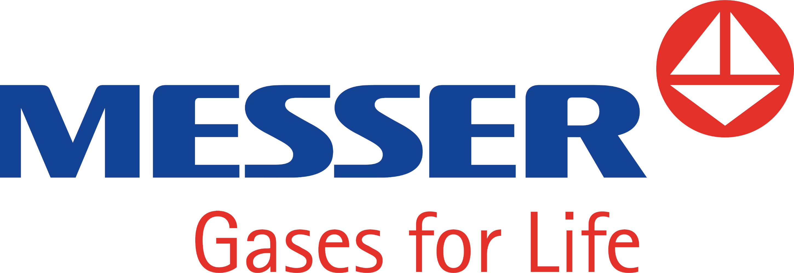
Carbon Service & Consulting 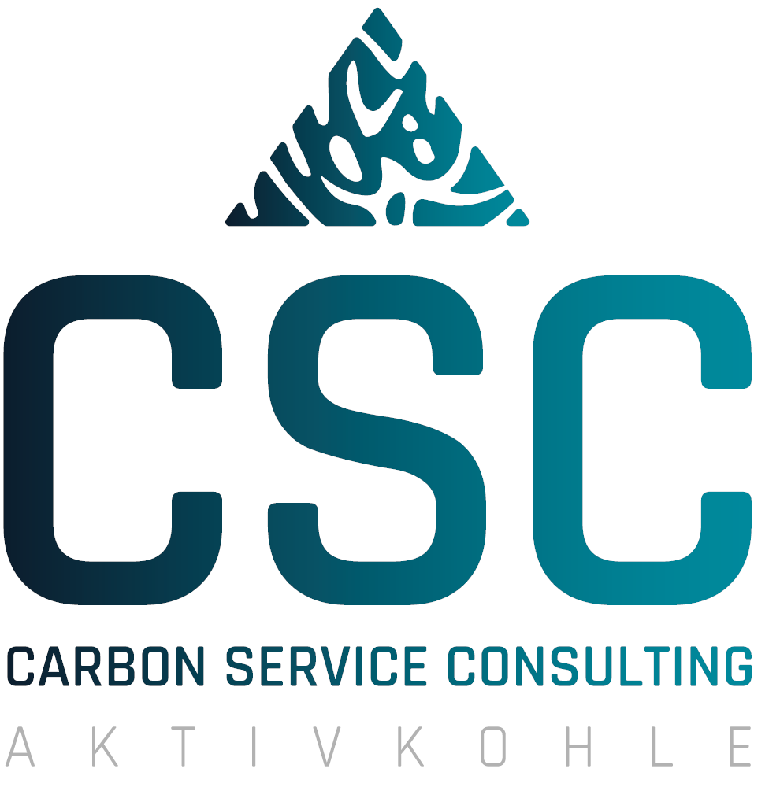
- Sponsors
UNICARB CWK Chemiewerk Bad Köstritz 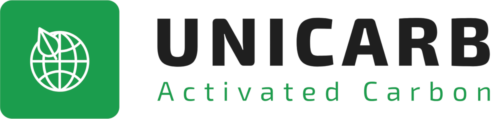
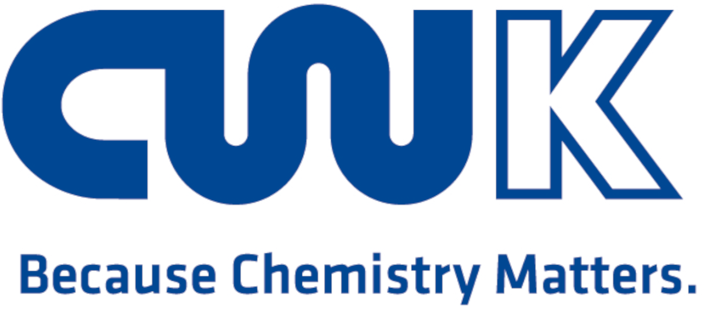
Arkema Molecular Sieves 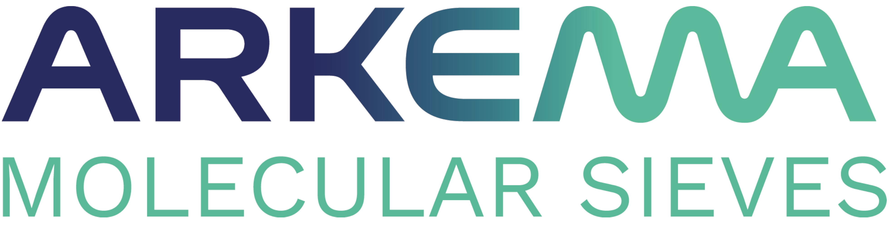
- Exhibitors
CarboTech Microtrac Hengst Carbon Service & Consulting 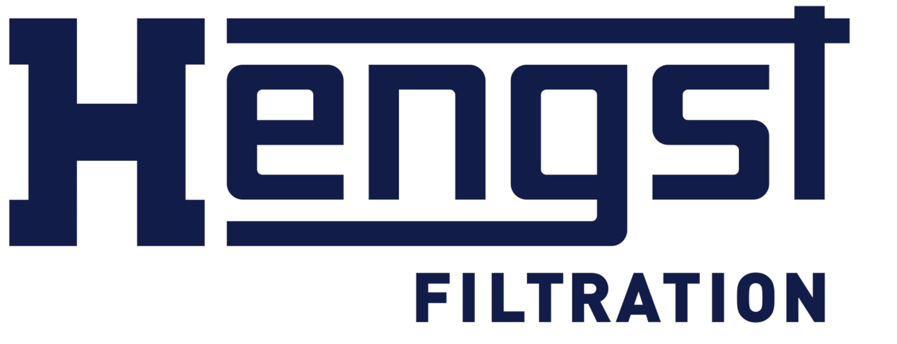
Jacobi Group Arkema Molecular Sieves 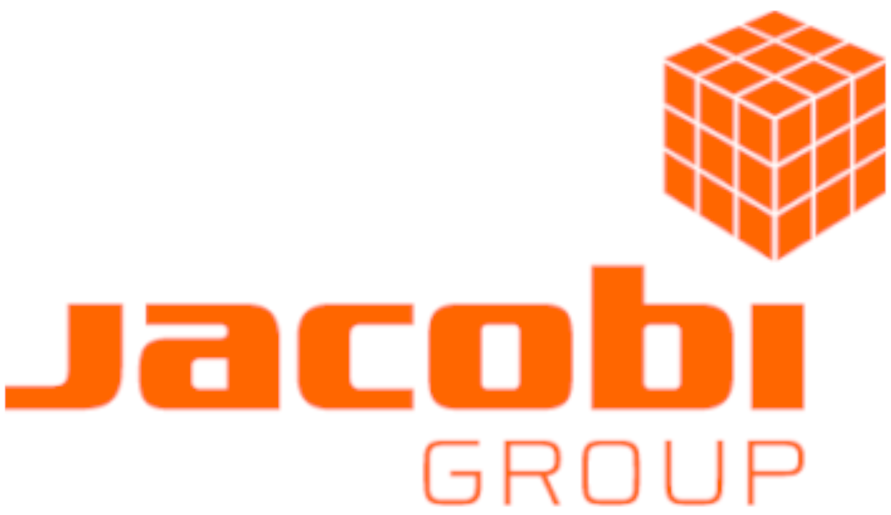
Hiden Isochema 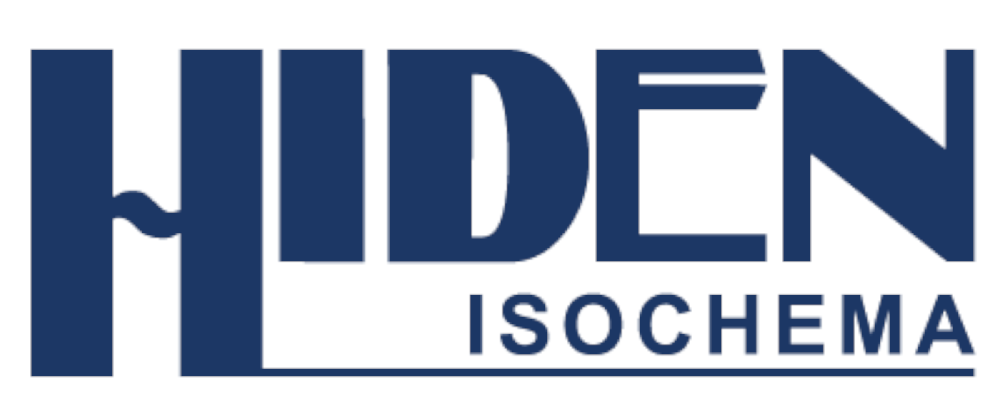
- Supports
Johannes-Rau-Forschungsgemeinschaft DECHEMA French Adsorption Society (AFA) 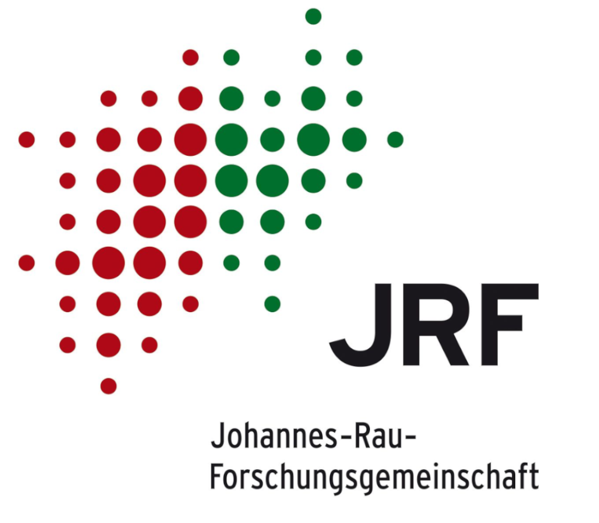
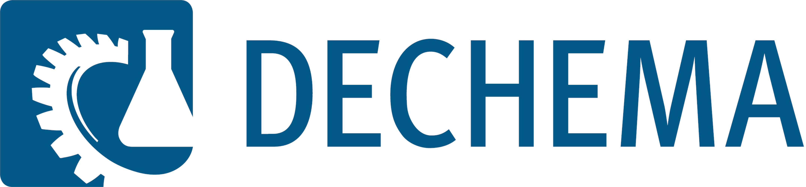
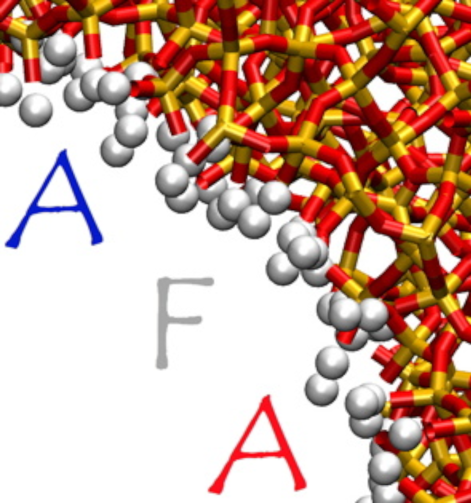